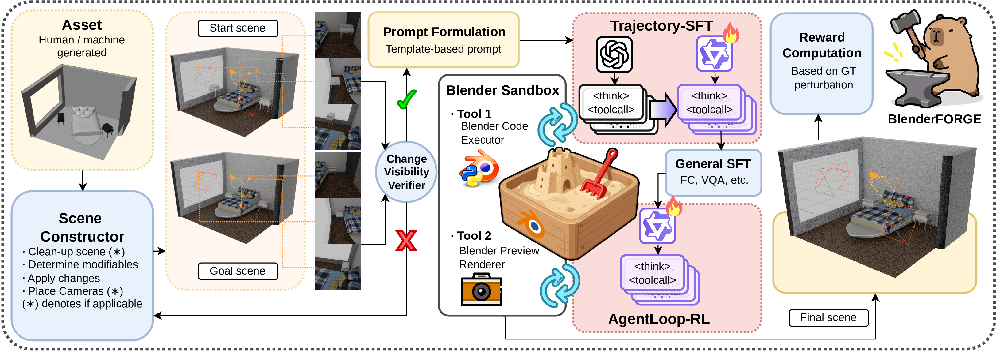

Abstract
Precise, programmatic 3D editing requires executable interaction and verifiable feedback. We introduce BlenderFORGE, a data–environment–optimization framework for training open-weight multimodal agents to edit Blender scenes through Python code. The framework combines perturbation-based task generation, an instance-isolated Blender sandbox, and a two-stage training pipeline comprising trajectory supervised fine-tuning and multi-turn AgentLoop-RL. It covers four task families: object placement, shape-key editing, lighting adjustment, and material modification. The trained Qwen3-VL-8B agent improves over its base model across all four families. Evaluations on held-out camera tasks, BlenderGym, and a second model backbone provide additional evidence of transfer.

Video
Demonstrations
Object Placement
Shape-Key Editing
Lighting Adjustment
Material Modification
Quantitative Results
Comparison of zero-shot and BlenderFORGE-trained models on the test set. Results include Qwen3-VL-8B and Qwen3.5-9B backbones.
Citation
% Placeholder: bibliographic details to be updated.
@misc{blenderforge,
title = {BlenderFORGE: Framework for Optimizing Reactive
3D-Graphics Editing Ability of MLLMs},
author = {TBD},
year = {TBD}
}